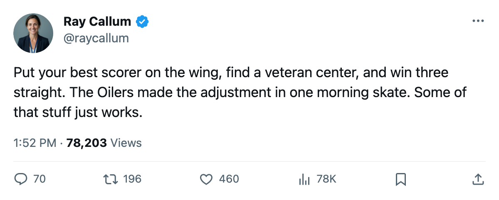
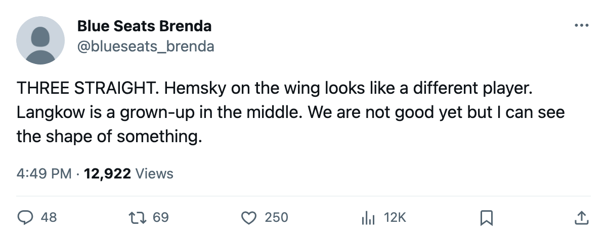

SJ
SJ CHI
CHIMorning Skate Notes: Edmonton Put Hemsky on the Wing and Won a Third Straight
Langkow entered at center, Rita moved up the power play, and the Oilers have lost 11 days to injury all season.
 Ray CallumSenior correspondent · Home Ice Network
Ray CallumSenior correspondent · Home Ice Network
Edmonton beat San Jose 3-2 in overtime Tuesday night on 24 shots, extending its winning streak to 3 games. The Oilers sit 11th in the West with 16 points through 17 games.
The change that mattered came at center.  Ales Hemsky75 slid from the second-line center slot to right wing, and
Ales Hemsky75 slid from the second-line center slot to right wing, and  Daymond Langkow73 walked into that center position for the first time this season. The Oilers outshot San Jose 24-16.
Daymond Langkow73 walked into that center position for the first time this season. The Oilers outshot San Jose 24-16.
Six men dressed differently
 Mike Johnson75 came in at left wing on the second line and joined the second power-play unit.
Mike Johnson75 came in at left wing on the second line and joined the second power-play unit.  Jani Rita75 jumped from the second power-play unit to the first.
Jani Rita75 jumped from the second power-play unit to the first.
On the other side of the shuffle,  Ethan Moreau69 and
Ethan Moreau69 and  Oleg Petrov67 were scratched.
Oleg Petrov67 were scratched.  Steve Staios64 lost his spot on the fourth pairing and both special teams. Brad Isbister68 came off the power play. Bobby Allen63 gained a spot on the second defensive pairing and the second power-play unit.
Steve Staios64 lost his spot on the fourth pairing and both special teams. Brad Isbister68 came off the power play. Bobby Allen63 gained a spot on the second defensive pairing and the second power-play unit.
 Brian Pothier64 walked into the third right defense spot, replacing
Brian Pothier64 walked into the third right defense spot, replacing  Jesse Wallin59, who is out with a rib through November 26.
Jesse Wallin59, who is out with a rib through November 26.
The medical bill
 Edmonton Oilers have lost 11 days to injury all season across 10 spells. That is second-fewest in the Northwest division, behind Calgary's 5. Wallin is the only man currently on the shelf.
Edmonton Oilers have lost 11 days to injury all season across 10 spells. That is second-fewest in the Northwest division, behind Calgary's 5. Wallin is the only man currently on the shelf.
Chicago carries 55 injury days, a 10-game losing streak, and a home record of 1-9. Edmonton has scored 42 goals in 17 games and given up 48. Neither number is good. Only Wallin is on the shelf, and the lineup changes from Tuesday produced 24 shots and a win.
These clubs have met once. Edmonton won 4-1.
What to watch
The Hemsky-at-wing experiment gets its first back-to-back test this week.  Mike York76 moved down from the first line to the third and shifted to center, which suggests the coach liked what he saw enough to give the rookie another look in the middle. Brian Pothier on the third pair gives the Oilers a right-handed option they lacked when Wallin was in and the pairings were left-heavy.
Mike York76 moved down from the first line to the third and shifted to center, which suggests the coach liked what he saw enough to give the rookie another look in the middle. Brian Pothier on the third pair gives the Oilers a right-handed option they lacked when Wallin was in and the pairings were left-heavy.

